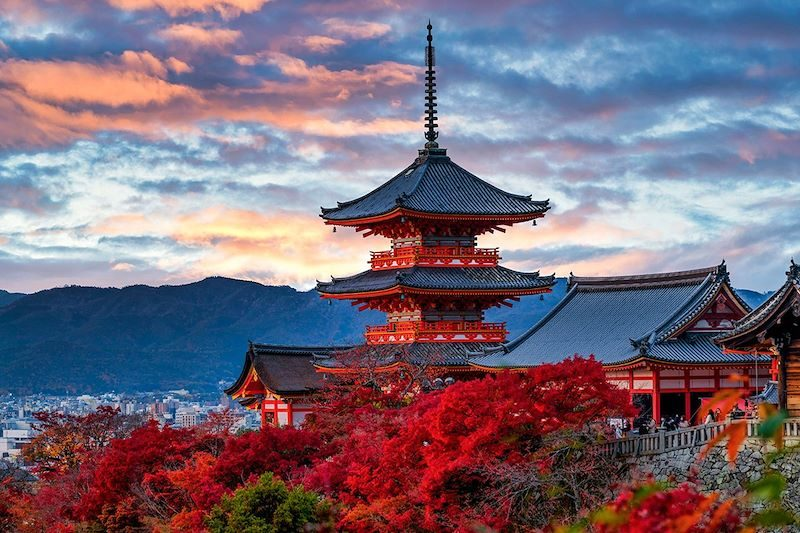

Live
日本 — いま
En direct du Japon
Heure actuelle au Japon (JST)
--:--:--
chargement…
Tokyo — Kabukicho, en direct
Flux YouTube en direct
Tokyo — Shinjuku Kabukicho, en direct
Flux YouTube en direct
Asakusa — Porte Hōzōmon, en direct
Flux YouTube en direct
Tokyo — Shibuya Scramble Crossing, en direct
Flux YouTube en direct
Osaka, en direct
Flux YouTube en direct
京都 — Kiyomizu-dera
